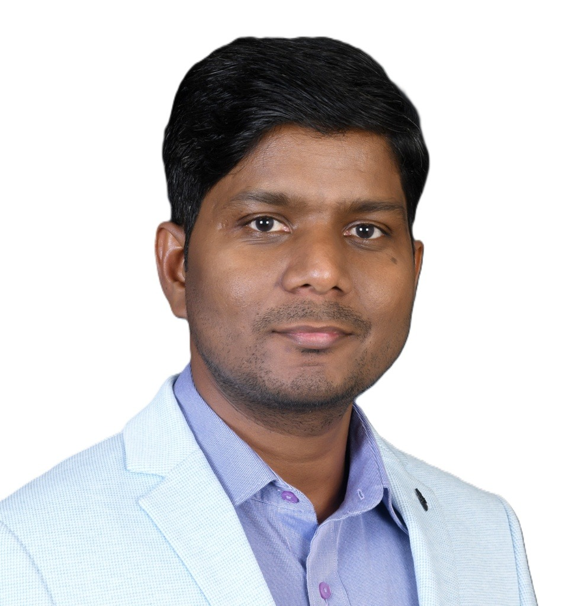

Making expertise
easier to reuse.
Developed an integrated engineering knowledge-management approach and AI-enabled discovery capability to make relevant knowledge more accessible.
Explore the work ↗Connecting engineering expertise with digital capability to improve how teams work.
I’m Pratap Nayak. I bring more than two decades of manufacturing and engineering experience to solution delivery, knowledge management, workflow improvement, and practical AI adoption.
Bengaluru, India · Manufacturing & engineering · Global collaboration
From individual expertise to shared organizational capability & value generation.
My work connects engineering delivery with the systems around it: how knowledge is reused, resources are planned, and recurring effort is reduced.
Developed an integrated engineering knowledge-management approach and AI-enabled discovery capability to make relevant knowledge more accessible.
Explore the work ↗Connected resource availability, project scheduling, and delivery tracking to support planning and visibility across engineering work.
Explore the work ↗Combined process standardization, engineering checks, and workflow automation to address repeated effort and improve consistency.
Explore the work ↗I bring an engineering perspective to organizational improvement—connecting technical decisions with people, processes, and business priorities.
Aligning technical expertise, project priorities, and resources to strengthen solution quality and delivery performance.
Identifying friction, simplifying workflows, and establishing more consistent ways of working.
Making engineering knowledge more accessible and reusable in day-to-day problem-solving.
Translating operational needs into practical applications of automation, analytics, and AI-enabled tools.
Working with stakeholders to connect technical solutions with everyday use and capability development.
Keeping productivity, quality, customer needs, and delivery commitments in view when shaping improvements.

Pratap Nayak · Bengaluru, India
My career began close to manufacturing execution, building a foundation in machining, tooling, and precision engineering.
Over time, my responsibilities expanded into engineering solution delivery, team development, planning, and process improvement.
That progression shaped a broader interest: not only how to solve an individual engineering problem, but how to help teams solve problems more consistently and effectively.
Today, my work brings together engineering experience, digital capabilities, and organizational knowledge. I am particularly interested in the connections between technical expertise, better systems of work, and sustainable business improvement.
Grounded in shop-floor discipline; focused on repeatable systems, shared knowledge, and practical AI adoption.
Three areas of work that connect domain expertise, process design, and digital capability. Open each overview to explore the approach.
An integrated knowledge-management approach, supported by AI-enabled discovery, for engineering teams.
Relevant engineering knowledge was distributed across documents, project records, and individual experience. A more structured approach was needed to support discovery and reuse.
Developed an integrated approach to organizing engineering knowledge and enabling discovery using Microsoft 365-based tools and an AI-enabled interface.
Connected knowledge organization, centralized access, and a conversational discovery layer, with a focus on making prior engineering work easier to access.
SharePoint Online, Microsoft Teams, Power Platform, and Copilot Studio, Copilot Agent, MS Access, Power BI, applied to engineering knowledge and workflows.
A connected planning and tracking approach to support resource allocation and engineering execution.
Engineering delivery depended on coordinating project demand, resource availability, priorities, and schedules.
Developed a connected planning and tracking approach, bringing resource availability and project commitments into a more visible operating framework.
Linked task allocation, delivery tracking, resource availability, and holiday calendars to support workload planning.
More informed prioritization, clearer delivery commitments, and better visibility of the work and constraints affecting the team.
Process standardization and targeted automation grounded in practical engineering needs.
Recurring manual activities and variations in practice created opportunities to simplify work and improve consistency.
Combined engineering experience, customized automation, quality checklists, and workflow improvements to address repeated effort.
Identified recurring activities, standardized suitable checks, and automated selected tasks while supporting reuse of proven engineering information.
Engineering applications and workflow tools, including AutoLISP, Excel VBA, Power Apps, and Power Automate.
From the production site, these 3 rollout steps and 6 featured tool cards (7 total in the catalog) pair with the working library below—built to test assumptions transparently in the browser.
Map where knowledge, time, and cost leak across workflows, and identify where skills or visibility are thin before choosing tools.
Pilot one high-value fix with clear assumptions, measured baselines, and a named owner so claims are backed by evidence.
Standardize what works, build team ownership so the system runs without bottlenecks, and refine from live operating feedback.
Business-case calculator for machining cost per part, including NPV and break-even analysis.
Open GitHub Calculator ↗ Quality & FlowBrowser suite covering SPC, FMEA, DPMO-to-sigma, Gage R&R, Pareto, 8D, A3, PPAP, QFD, SMED, OEE/takt, and VSM.
Open GitHub Toolkit ↗ Technology & AIEvidence-tagged value case for engineering AI initiatives that separates measured inputs from key assumptions.
Open GitHub Value Case ↗ Operations & Supply ChainMixed-integer linear programming model for evaluating facility location and network trade-offs.
Open GitHub Model ↗ Technical LeadershipEvaluates how interviewer leniency affects hiring shortlists and where candidate signals remain indistinguishable.
Open GitHub Audit ↗ My Toolkit · MachiningSpeeds/feeds, Taylor tool life, Engineered Productivity (Tp/Tc), cutting forces, cycle time, and customer value cases.
Open My Toolkit ↗Building the thing is the fastest way to find out whether I actually understand it.
A method that has to become working logic stops being a diagram and starts having edge cases — what the formula does at zero, which single assumption is carrying the answer, where the technique quietly stops applying. Most of what I trust about these methods I learned by getting that part wrong first, in a spreadsheet, before it mattered.
Publishing them is the second half of the same idea. A tool that runs in public can be checked: the inputs are editable, the assumptions sit separately from the measured values, and anyone who disagrees with a calculation can open it and say so. That is a more useful claim to make than a slide asserting the same result.
The collection spans machining economics, quality and flow analysis, lean and operational excellence practice, supply chain modelling, and the business case for AI in engineering work. It is also where my own study ends up — what I am reading becomes something that runs, or I have not finished reading it.
All examples are synthetic. The tools are built for reference and learning, and should be verified against manufacturer recommendations and local policy before anything on a shop floor depends on them. Views are my own.
I approach improvement as an operating challenge, not simply a technology deployment. These principles guide the way I think about solutions.
Start with the problem, the people involved, and the constraints—not the latest tool.
Look beyond individual tasks to knowledge, processes, resources, and decisions.
Define what improvement means and distinguish measured outcomes from expected benefits.
Consider usability, ownership, and capability development as part of implementation.
Use feedback and operating experience to refine a solution after launch.
A manufacturing foundation supported by continued learning in digital transformation, data, and AI-enabled tools.
Recognition for contributions to digital transformation and knowledge management.
The tools are enablers. The focus remains on the engineering problem, the people doing the work, and the value of the improvement.
I welcome conversations about engineering performance, digital transformation, knowledge-led improvement, and practical AI adoption in manufacturing.